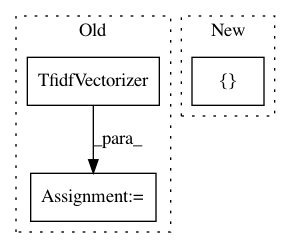

d04904cdd1df7afba9859868f4e487d3a2332070,demo_semiotic.py,,,#,6
Before Change
newsgroups_train = fetch_20newsgroups(subset="train", remove=("headers", "footers", "quotes"))
vectorizer = TfidfVectorizer()
tfidf_X = vectorizer.fit_transform(newsgroups_train.data)
corpus = st.CorpusFromScikit(
X=CountVectorizer(vocabulary=vectorizer.vocabulary_).fit_transform(newsgroups_train.data),
y=newsgroups_train.target,
feature_vocabulary=vectorizer.vocabulary_,
category_names=newsgroups_train.target_names,
raw_texts=newsgroups_train.data
).build()
semiotic_square = st.SemioticSquare(
corpus,
category_a="alt.atheism",
category_b="soc.religion.christian",
neutral_categories=["talk.religion.misc"]
)
html = st.SemioticSquareViz(semiotic_square).get_html(num_terms=5)
fn = "demo_semiotic_square_atheism_christianity.html"
open(fn, "wb").write(html.encode("utf-8"))
print("Open " + fn + " in Chrome or Firefox.")
After Change
y_label="Plot-Review",
neutral_category_name="Plot Description",
metadata=movie_df["movie_name"],
x_axis_values=[-2.58, -1.96, 0, 1.96, 2.58],
y_axis_values=[-2.58, -1.96, 0, 1.96, 2.58])
fn = "demo_semiotic.html"
In pattern: SUPERPATTERN
Frequency: 3
Non-data size: 3
Instances
Project Name: JasonKessler/scattertext
Commit Name: d04904cdd1df7afba9859868f4e487d3a2332070
Time: 2018-01-08
Author: jason.kessler@gmail.com
File Name: demo_semiotic.py
Class Name:
Method Name:
Project Name: IndicoDataSolutions/Enso
Commit Name: 5a9fd920e12d0b27aa6f25516368608df4b4f1f1
Time: 2019-07-23
Author: matthew.bayer@indico.io
File Name: enso/experiment/tfidf.py
Class Name: TfidfLogisticRegression
Method Name: __init__
Project Name: scikit-learn/scikit-learn
Commit Name: a49752375d5775b1f0e6393a811c937332dccb18
Time: 2020-05-17
Author: jliu176@gmail.com
File Name: examples/compose/plot_column_transformer.py
Class Name:
Method Name: